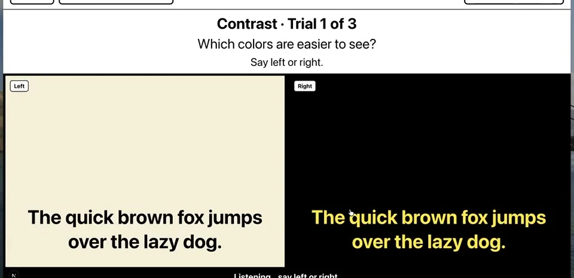
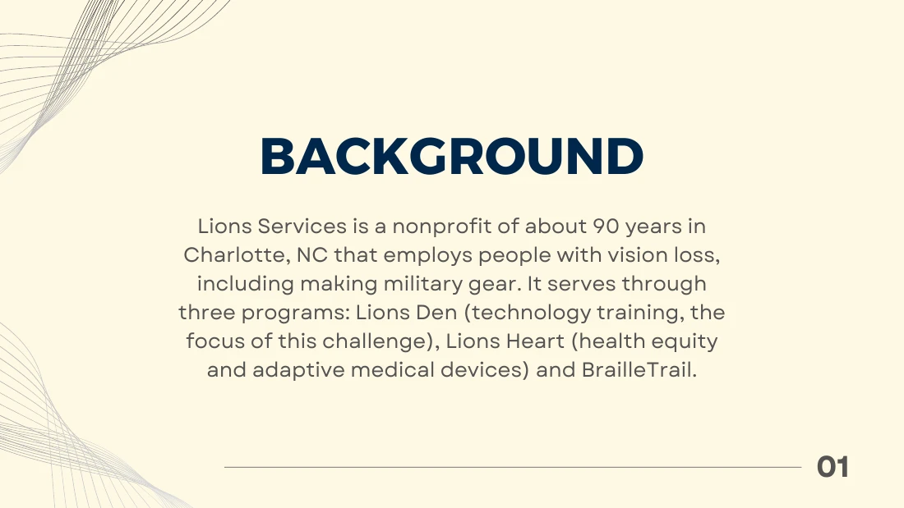
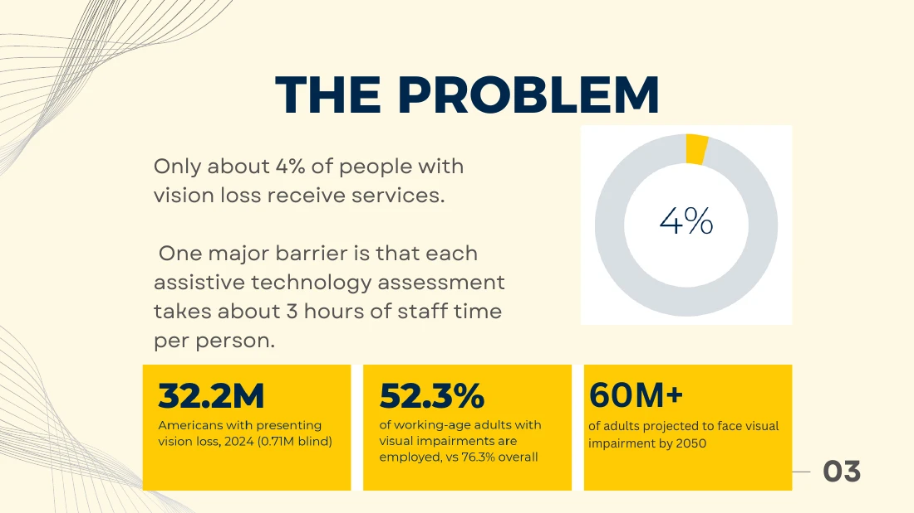
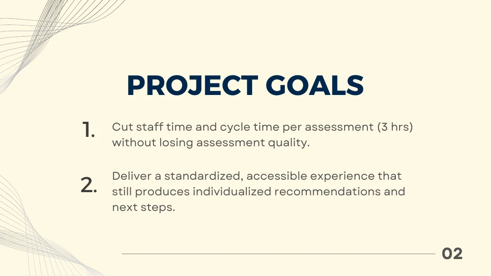
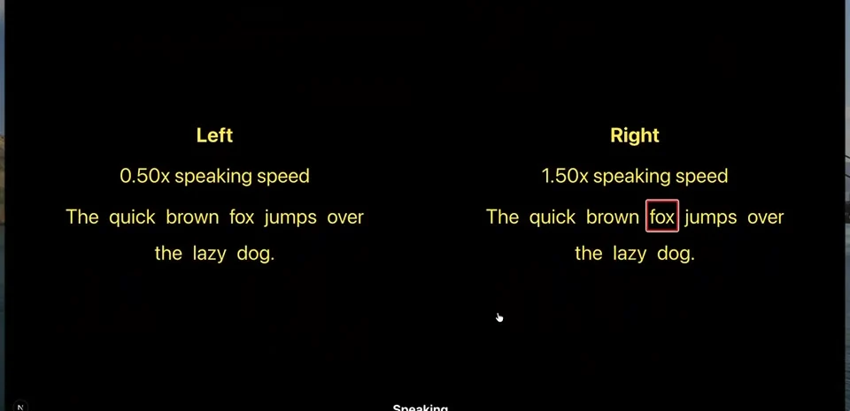
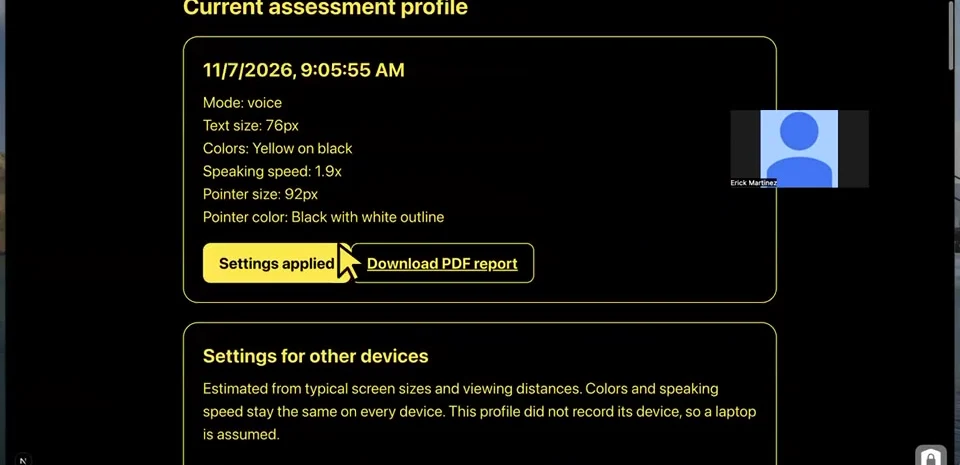

Code for Good / Team 28 / Social impact
Designing accessible technology assessments.
How Team 28 translated an accessibility challenge from Lions Services into a multimodal assessment experience—and how I helped frame and communicate the product story.


My role
Making the problem as clear as the solution.
As part of Team 28, I created approximately 80% of our Canva presentation. I independently presented the Background, The Problem, and Project Goals sections to the Lions Services client and JPMorganChase Code for Good judges.
My primary contribution was presentation design, product storytelling, and stakeholder communication. My teammates led application development; the product described below is our team's work.
01 / Discovery
Understanding the problem.
Background
Assistive technology is personal.
Lions Services is a Charlotte-based nonprofit supporting people with vision loss through employment, rehabilitation, and technology training. Our challenge centered on its Lions Den program.
In the stakeholder panel, the team learned how differently vision loss can affect technology use. A useful assessment must account for varied preferences and needs.


The problem
Per assessment, according to the panel.
The stakeholder discussion described assessments involving computer orientation, understanding personal goals, evaluating functional vision, and adjusting accessibility settings—primarily in person and with a small staff.
Efficiency matters, but standardization cannot mean that everyone receives the same recommendations.
“How might we reduce assessment time without losing accessibility, personalization, or quality?”
Project goals
Faster assessments. Individualized outcomes.
Our goals were to reduce staff time and assessment cycle time, and to deliver a consistent experience that could still produce personalized recommendations and clear next steps.
These were intended outcomes, not verified results.

Research basis: Lions Services challenge statement and stakeholder-panel notes. This is stakeholder discovery, not a substitute for direct usability testing with blind or low-vision users.
02 / Product decisions
From stakeholder needs to design choices.
The team's discussions focused on how people with varying vision and technology experience could navigate an assessment and how staff might reuse the results.
Offer different ways to respond.
Text, voice, or spoken prompts with tapping give users a choice of interaction method rather than forcing a single input pattern.
Make calibration comparative.
Present two options at a time to help users identify preferred contrast, speech, and pointer settings without starting from technical values.
Keep a record of preferences.
Saved profiles and exported reports aim to help staff revisit previous settings instead of restarting every conversation from zero.
Consider implementation cost.
The team discussed voice-model expense and potential recognition errors—important feasibility questions for a nonprofit context.
03 / The solution
A multimodal assessment experience.
The demonstration showed a working flow for selecting an interaction mode, comparing settings, and accessing assessment results. The screenshots below are from Team 28's recorded demo.


Product Demonstration
Watch Team 28's accessibility assessment prototype in action, from choosing an interaction mode to reviewing personalized assessment results.
04 / Outcomes
What we demonstrated—and what remains untested.
Multiple interaction modes, adaptive comparisons, applied settings, saved assessment information, and report-related flows.
Reduced staff time, independent usability with representative users, recommendation quality, and full screen-reader/keyboard accessibility.
The next step proposed by the team was a pilot with Lions Services staff comparing assessment time and quality with the existing process.
05 / Personal reflection
Communicating the why before the how.
Product storytelling is a design responsibility.
Creating most of our presentation and personally delivering the Background, Problem, and Project Goals sections pushed me to organize a complex client challenge into a story stakeholders could follow. The challenge was not just to describe features; it was to connect them to people, constraints, and desired outcomes.
I came away with a stronger appreciation for clear problem framing and for the difference between a working demo and proven impact. If I continued this project, I would prioritize testing with people who have low vision and Lions Services staff, then use completion time, task success, and recommendation usefulness to guide the next iteration.
This reflection is a first draft based on my documented role. I will revise it to reflect my own specific takeaways before submitting.
Credits & references
Built as a team.
Team 28: Nkwa Onwudiwe (presentation and stakeholder communication), Alishba Jafri (front-end development), Erick Martinez and Tanvi Garg (back-end development), according to our project notes.
Client challenge: Lions Services Inc. · JPMorganChase Code for Good.
Lions Services ↗ · Team repository ↗
Before final submission: add each teammate's portfolio URL (if available), confirm repository visibility, and verify that this external Code for Good project is eligible for the course's semester-long team-project requirement.